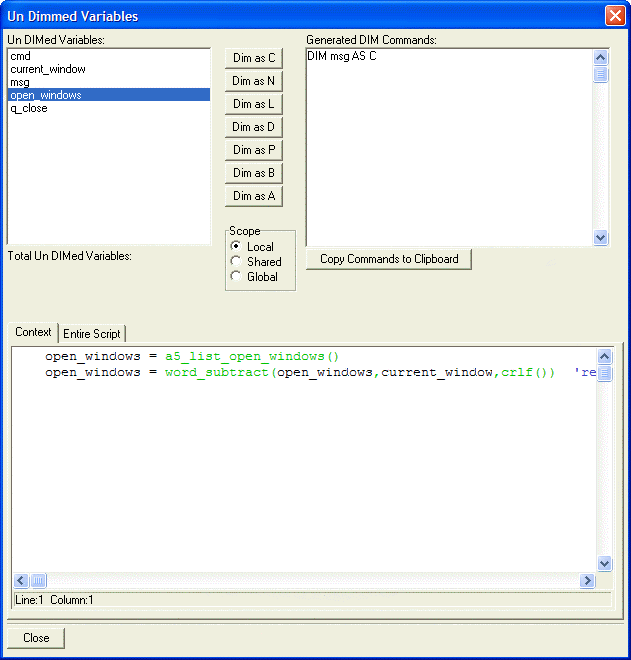

Un-Dimmed Variables Dialog Box
When in the Code Editor clicking Code > Find Un-DIMmed Variables displays the Undimmed Variables dialog box. This useful utility will search for variables that have not been dimensioned. The Context tab at the bottom of the screen shows the line that first references the variable.
You can set the scope of the variable by clicking one of the radio buttons in the Scope group, then DIM it by clicking one of the seven buttons at the center of the screen.

See Also
Declaring a Variable, Variable Data Types